Je website zelf
aanpassen
Een korte handleiding voor Eva. Teksten veranderen, een foto wisselen en opslaan, stap voor stap.
In deze handleiding
- Inloggen
- Zo ziet het scherm eruit
- Een tekst aanpassen
- Een foto wisselen
- Telefoonnummer, e-mail en menu
- Blokken toevoegen of verplaatsen
- Opslaan
- Iets fout gegaan? Geen zorgen
Voor je begint
Je kunt niets kapotmaken
Kleuren, lettertypes en de opmaak van je website liggen vast. Je past alleen de inhoud aan: teksten en foto's. En alles wat je opslaat, kan altijd weer worden teruggezet.
Tip: werk het liefst op een computer of laptop. Op een telefoon kan het ook, maar het scherm is dan wel erg klein.
Het beheerscherm is in het Engels. Deze woorden kom je tegen:
Log ininloggen
Saveopslaan (je wijziging gaat live)
Resetwijzigingen ongedaan maken (vóór het opslaan)
Uploadeen foto vanaf je computer toevoegen
Stap 1
Inloggen
- Ga in je browser naar:
afscheid-met-eva.netlify.app/admin
- Klik op de oranje knop Log in.
- Log in met info@afscheidmeteva.nl en je eigen wachtwoord.
Zodra je eigen domein gekoppeld is, wordt het adres afscheidmeteva.nl/admin. Tommy laat je dat weten.
Afscheid met Eva · handleiding website2
Stap 2
Zo ziet het scherm eruit
Na het inloggen zie je twee delen:
- Links: het bewerkpaneel. Hier staan de teksten en foto's die je kunt aanpassen.
- Rechts: je website, precies zoals bezoekers hem zien. Wat je links verandert, zie je hier meteen.
Naar een andere pagina? Klik rechts op je website gewoon op een menu-item, bijvoorbeeld Kosten. Of klik links bovenaan op Pagina's en kies daar een pagina.
Blauwe stippellijntjes rechts laten zien wat je kunt aanpassen. Op de echte website zie je ze niet.
Afscheid met Eva · handleiding website3
Stap 3
Een tekst aanpassen
- Klik rechts op de tekst die je wilt veranderen. Hij wordt blauw.
- Links springt het bijbehorende vakje open.
- Typ je nieuwe tekst in dat vakje. Rechts zie je meteen hoe het eruitziet.
- Klaar? Klik op Save (zie stap 7).
Nieuwe alinea? Druk twee keer op Enter, zodat er een lege regel tussen staat.
Op een knop klikken (zoals Bel Eva – dag en nacht) werkt in dit scherm niet als knop: je past dan de tekst van de knop aan.
Afscheid met Eva · handleiding website4
Stap 4
Een foto wisselen
- Klik rechts op de foto die je wilt vervangen.
- Links zie je de foto. Klik op de foto om een andere te kiezen. Je ziet dan al je foto's; kies er een, of klik op Upload om een nieuwe foto van je computer toe te voegen.
- Vul bij Omschrijving van de foto kort in wat erop staat, bijvoorbeeld "Eva met een kop thee". Dat helpt slechtzienden en Google.
Welke foto's werken goed? Een foto van je telefoon is prima. Liever niet groter dan 2000 pixels breed; de website maakt hem zelf kleiner en sneller.
Het prullenbakje naast een foto haalt de foto weg uit dat blok. Hij blijft wel bewaard bij je foto's.
Afscheid met Eva · handleiding website5
Stap 5
Telefoonnummer, e-mail en menu
Sommige gegevens staan op veel plekken tegelijk: je telefoonnummer, WhatsApp, e-mailadres, adres, KvK-nummer en het menu. Die pas je op één plek aan, en dan verandert het overal op de site.
- Klik linksboven op de drie streepjes (☰).
- Kies Instellingen en dan site.
- Klik op het potloodje bij bijvoorbeeld Contactgegevens, pas aan en klik op Save.
Let op bij het telefoonnummer: er zijn twee vakjes. Eén voor hoe het nummer eruitziet (06 51 58 73 26) en één voor het bellen (+31651587326). Verander je nummer ooit, pas dan beide aan. Twijfel je, vraag het Tommy.
Afscheid met Eva · handleiding website6
Stap 6
Blokken
Elke pagina bestaat uit blokken, zoals Foto + tekst, Citaatband of Ervaringen. Je ziet ze links onder elkaar, in dezelfde volgorde als op de pagina.
- Aanpassen: klik op het potloodje.
- Verplaatsen: pak het blok bij de zes puntjes (⠿) en sleep het omhoog of omlaag.
- Toevoegen: klik op het oranje + naast Blokken en kies een soort blok. Het komt onderaan; vul daarna de teksten in.
- Verwijderen: klik op het rode prullenbakje.
Google & WhatsApp-voorbeeld (bovenaan) is de titel en korte tekst die mensen zien in Google of als je een link deelt via WhatsApp.
Stap 7
Opslaan
- Klik linksonder op Save.
- Na 1 à 2 minuten staat je wijziging live op je website. Ververs de pagina om het te zien.
- Toch niet bewaren? Klik dan vóór het opslaan op Reset.
Afscheid met Eva · handleiding website7
Stap 8
Iets fout gegaan? Geen zorgen
Elke keer dat je opslaat, wordt er automatisch een versie bewaard.
- Kleine vergissing: typ de oude tekst gewoon opnieuw en sla op.
- Grotere vergissing: stuur Tommy een berichtje met welke pagina en ongeveer hoe laat. Hij kan elke eerdere versie terugzetten, ook van weken geleden.
Handige tips
Eerst kijken, dan opslaan. Rechts zie je precies hoe het wordt. Pas als het goed is, klik je op Save.
Lange ervaringen van families worden op de telefoon automatisch ingekort met een knop "Lees verder". Daar hoef je niets voor te doen.
Klein kopje boven een titel (zoals OVER MIJ) typ je gewoon normaal. De website maakt er zelf hoofdletters van.
Je wachtwoord is alleen van jou. Deel het met niemand, ook niet met Tommy.
Hulp nodig? Bel of app Tommy. Je kunt echt niets kapotmaken: alles wat je opslaat, kan altijd worden teruggezet.
Afscheid met Eva · handleiding website8